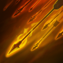

Legion Commander
Описание
Legion Commander — это герой с ближним типом атаки, основной характеристикой которого является сила. Ее первая способность, Overwhelming Odds, оборачивает количественное преимущество врагов против них самих, нанося им урон и даруя вам дополнительную скорость передвижения за каждое существо или героя. Наносит дополнительный урон иллюзиям и призванным существам в виде процента от их текущего здоровья. Вторая способность героя, Press the Attack, снимает все отрицательные эффекты с дружественной цели и добавляет скорость атаки и регенерацию здоровья на короткое время. Пассивная способность, Moment of Courage, будучи атакованной, дает герою пассивный шанс нанести ответный удар и восстановить часть здоровья. Ультимативная способность, Duel, вызывает героя на дуэль на небольшой промежуток времени. Legion Commander и герой не могут использовать способности или предметы. Если один из дуэлянтов умрет во время действия способности, победитель дуэли получит постоянный бонус к урону. При покупке Aghanim's Scepter icon.png Aghanim's Scepter в дуэли вы невосприимчивы ко всему урону, кроме урона, наносимого врагом-дуэлянтом, а так же получаете магический иммунитет на время дуэли.
Биография
Они. пришли без предупреждения. Внутри городских стен Стоунхолла вдруг раздался ужасный грохот, и из неизведанной тьмы явились бесчисленные твари, несущие пламя и разруху, убивающие и захватывающие матерей и сыновей во имя тёмных целей. Из бывшей когда-то могучей армии Стоунхолла лишь Бронзовый легион под руководством главнокомандующей Тресдин находился рядом и смог ответить на зов помощи. Въехав в город, они начали пробиваться через окровавленные переулки и пылающие рынки, прорубая свой путь к источнику внезапного вторжения — пространственному расколу на главной площади, на краю которого бушевал лидер Орды бездны. Охваченный губительным блеском, он взмахивал своим гигантским клинком, рассекая воинов напополам, и плоть его жертв тут же начинала разлагаться. Тресдин подняла свой окровавленный меч и взглянула на чудовище. Оно обернулось, обнажив в улыбке массу клыков. Забыв о битве, бушующей вокруг, они бросились навстречу друг другу. Отражая один выпад за другим, пара кружилась в смертельном танце, пока солдаты Бронзового легиона терпели сокрушительное поражение. Тресдин сделала выпад, а враг встретил её своим мечом. Сильнейший удар сбоку заставил Тресдин покачнуться, но она собрала свои силы для ответного взмаха. Клинок ударился о клинок, вошел по рукоять в кривую лапу, разорвав её надвое, разбрызгивая ужасающую смесь искр и крови. Подлые твари ошеломленно смотрели на битву, а Тресдин не прекращала бить, вонзая меч всё глубже, прямо к неистово бьющемуся сердцу чудовища. Раздался жуткий вой, донесшийся до самых облаков, и монстр разразился потоком крови и страдания. Адский портал содрогнулся. Сила, питающая его, исчезла так же внезапно, как и появилась. Оставшиеся враги пали под напором стали Стоунхолла. Победу не было смысла праздновать: город лежал в руинах, выживших осталось совсем немного. Пожар продолжал полыхать. Развернув свои знамена, Тресдин собрала уцелевших союзников. В гневе она дала клятву отомстить силам бездны, и обречён будет тот, кто встанет на её пути.
Способности
Overwhelming Odds

Оборачивает численное преимущество врага против него самого, нанося урон
противникам в выбранной области. Каждое задетое существо увеличивает урон
от способности и дарует её владельцу дополнительную скорость передвижения.
Иллюзии и призванные существа получают дополнительный урон в виде доли от
их текущего здоровья.
Анимация применения: 0,3+0
Дальность применения: 1000
Радиус: 300
Базовый урон: 40/60/80/100
Урон за крипа: 14/16/18/20
Урон за героя: 30/60/90/120 с Талантом 95/125/155/185
Бонус к скорости передвижения за крипа: 3% Героя: 9%
Длительность ускорения: 7
15
100/110/120/130
Press the Attack
 Снимает все отрицательные эффекты с союзной цели и ненадолго увеличивает
её скорость атаки и восстановление здоровья.
Снимает все отрицательные эффекты с союзной цели и ненадолго увеличивает
её скорость атаки и восстановление здоровья.
Анимация применения: 0,2+0,93
Дальность применения: 700
Радиус: 0 с Талантом 350
Регенерация здоровья: 30/40/50/60
Дополнительная скорость атаки: 65/90/115/140
Длительность: 5
16/15/14/13
110
Moment of Courage
 Может мгновенно ответить на вражескую атаку контрударом с дополнительным
вампиризмом.
Может мгновенно ответить на вражескую атаку контрударом с дополнительным
вампиризмом.
Шанс: 25% с Талантом 35%
Вампиризм: 55%/65%/75%/85%
2,3/1,8/1,3/0,8
Duel
Вызывает выбранного вражеского героя на дуэль, в которой соперники
вынуждены атаковать друг друга небольшой промежуток времени. Они не могут
применять способности или использовать предметы. Если один из героев
погибнет на дуэли, победитель получит постоянный бонус к урону.
Анимация применения: 0,3+0
Дальность применения: 150
Доп. урон за победу: 10/18/26 С Талантом 50/58/66
Таланты
| Таланты героя | ||
|---|---|---|
| Press the attack по области радиусом 350 | 25 | +40 к урону за побелу в Duel |
| +10% к шансу срабатывания Moment of Courage | 20 | +35 к скорости передвижения |
| +65 к урону за героя от Overwhelming Odds | 15 | +30 к скорости атаки |
| +2 маны в секунду | 10 | +8 к силе |
Фан Арт
Факты
- Переход из DotA в Dota 2 изменил пол Legion Commander, однако сам персонаж и названия способностей остались неизменными.
Она будет отсылаться на свою старую модель в своих репликах при встрече других персонажей:
- При встрече героев, ездящих верхом, она будет выражать свою зависть или интерес к ним "I like your mount"). Ее модель в DotA была на лошади.
- Она также комментирует усы и бороды героев, когда убивает их или вызывает на дуэль "Nice mustache.". Ее модель персонажа в DotA имела усы
- В DotA, ее персонаж часто выражал свою неприязнь к эльфам (или к любым другим нелюдям.). Это перенесено и в Dota 2, где Legion Commander продолжает выражать свое недоверие другим расам, а не одному какому-либо ее представителю.
- Ее реплика," You won't win the war by dying for your Ancient. You'll win by making the other dumb, unfed bastard die for theirs!"Это отсылка к популярной цитате Джорджа С.Паттона:"Цель войны не в том, чтобы умереть за свою страну, а в том, чтобы заставить других ублюдков умереть за свою!"
- Данного героя озвучивала актриса Мерле Дэндридж, которая также озвучивала героиню Аликс Вэнс из серии игр Half-Life 2 , также разработанной компанией Valve.
- Иногда Legion Commander может сказать такую фразу "War. War always changes." , что является отсылкой к надписи из Fallout "War. War never changes.".
- По концепт-артам, можно понять, что клинки от Blades of Voth Domosh должны были принадлежать её оригинальному дизайну. Однако, Valve по каким-то непонятным причинам отказались от этого.